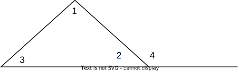
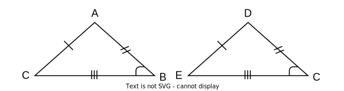
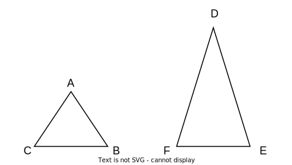

Chapter 4: Triangles and Congruence¶
4.1: Classifying triangles¶
Vocabulary
Note
Equal sides means equal angles.
4.2: Angles of triangles¶
Vocabulary
Examples
The triangle angle-sum theorem states that \(\angle 1\), \(\angle 2\), and \(\angle 3\) all add up to 180 degrees. \(\angle 1\) and \(\angle 3\) are the remote angles of \(\angle 4\), an exterior angle. The exterior angle theorem states the \(m \angle 1 + m \angle 3 = m \angle 4\).
4.3: Congruent triangles¶
Vocabulary
Writing Congruent Statements
4.4: Proving triangles congruent SSS SAS¶
Vocabulary
Warning
There is no AAA (Angle Angle Angle) or ASS (Angle Side Side).
Example
\(\triangle ABC \cong \triangle DEF\) since SAS (\(\overline{AB} \cong \overline{DC}; \overline{CB} \cong \overline{EC}; \angle B \cong \angle C\)) or SSS (\(\overline{AB} \cong \overline{DC}; \overline{CB} \cong \overline{EC}; \overline{CA} \cong \overline{ED}\)).
4.5: Proving triangles congruent ASA AAS¶
Vocabulary
4.6: Isosceles and Equilateral Triangles¶
Vocabulary
Congruent Parts
If \(\triangle ABC\) was an equilateral triangle, then all sides would be congruent. If \(\triangle DEF\) was an isosceles, then \(\overline{DF} \cong \overline{DE}; \angle DFE \cong \angle DEF\).
4.7: Congruence transformations¶
:)
4.8: Triangles and Coordinate Proof¶
Horary, no vocabulary!
How to identify triangles based on coordinates
Find the distance between all points using the distance formula, more information in 1.2: Line Segments and Distance.
Check for equal sides
Based on the number of equal sides find what kind of a triangle it is, scalene (no sides are equal), isosceles (two equal sides), or equilateral (three equal sides).
Before Final Notes :)¶
The isosceles triangle theorem states that, if two sides of a triangle are congruent, then the angles opposite those sides are congruent. The congruent angles are called the base angles.